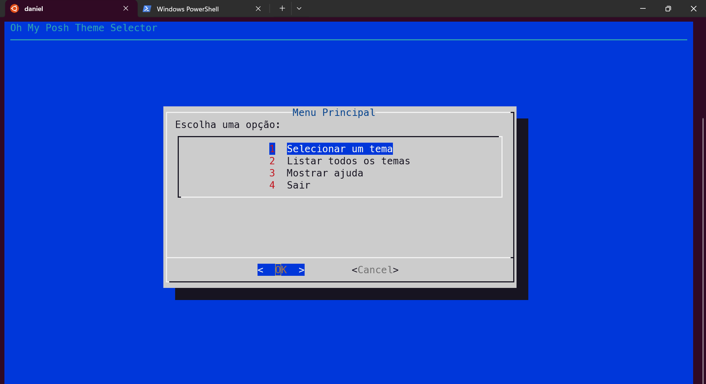
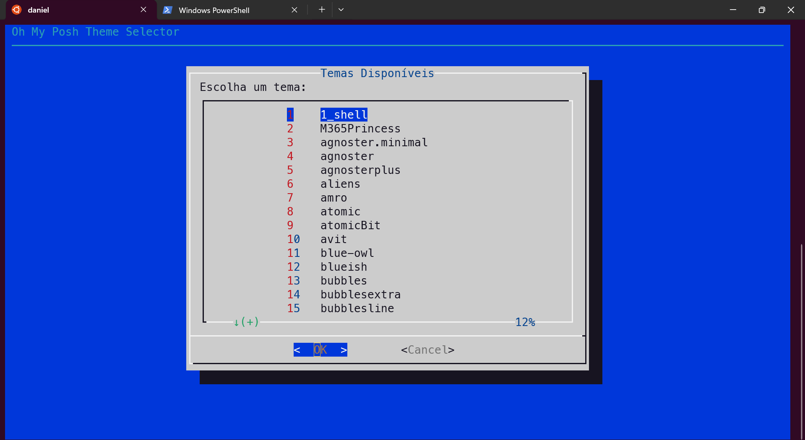
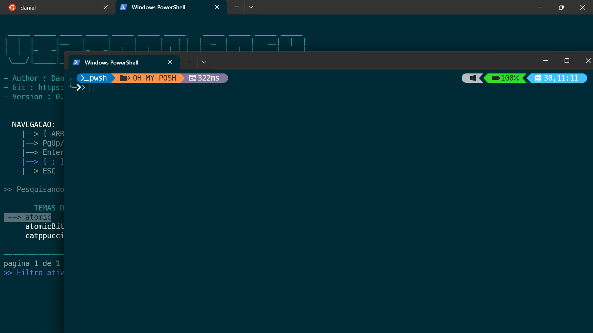

Screenshots







Transforme a experiência do seu terminal com a mais completa ferramenta para seleção e visualização de temas do Oh My Posh para Windows e Linux.
Interface intuitiva com navegação fácil tanto no PowerShell quanto no Dialog.
Encontre rapidamente temas com filtragem instantânea enquanto digita.
Visualize temas antes de aplicá-los, em janelas isoladas ou no terminal atual.
Atualiza seus arquivos de configuração com backup automático para segurança.
Funciona perfeitamente tanto no Windows (PowerShell) quanto no Linux (Bash).
Suporte a parâmetros para integração em scripts e automação.
Siga os passos abaixo para instalar o seletor de temas no Windows:
# Clone o repositório
git clone https://github.com/dvizioon/VIZIOONPOSH.git
cd VIZIOONPOSH
# Desbloqueie o script
Unblock-File .\oh-my-gui.ps1
# Execute o script
.\oh-my-gui.ps1
Para instalação permanente, copie os arquivos para um diretório em seu PATH:
entre dentro do da pasta ./VIZIOONPOSH que acabou de ser clonada.
# Criar diretório em AppData e adicionar ao PATH
$installDir = "$env:APPDATA\VIZIOONPOSH"
if (-not (Test-Path $installDir)) { New-Item -ItemType Directory -Path $installDir }
Copy-Item .\oh-my-gui.ps1, .\oh-my-gui.ps1 $installDir
# Adicionar ao PATH (requer reiniciar o terminal após)
$userPath = [Environment]::GetEnvironmentVariable("Path", "User")
if ($userPath -notlike "*$installDir*") {
[Environment]::SetEnvironmentVariable("Path", "$userPath;$installDir", "User")
}
Siga os passos abaixo para instalar o seletor de temas no Linux:
# Clone o repositório
git clone https://github.com/dvizioon/VIZIOONPOSH.git
cd VIZIOONPOSH
# Torne o script executável
chmod +x oh-my-linux.sh
# Execute o script
./oh-my-linux.sh
Para instalação global, mova para um diretório no PATH:
# Opção 1: Instalação para usuário atual
mkdir -p ~/.local/bin
cp oh-my-linux.sh ~/.local/bin/oh-my-linux
# Se ~/.local/bin não estiver no PATH, adicione-o
echo 'export PATH="$HOME/.local/bin:$PATH"' >> ~/.bashrc
source ~/.bashrc
# Opção 2: Instalação para todos os usuários
sudo cp oh-my-linux.sh /usr/local/bin/oh-my-linux
Nota: A versão Linux instalará automaticamente o Dialog se necessário. Em caso de falha, você pode instalar manualmente:
sudo apt-get install dialog # Ubuntu/Debian